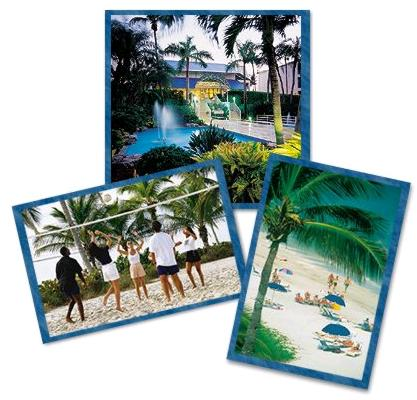
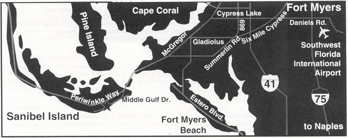

K'CAP' 2003: Venue

The conference hotel is the Sundial: Sanibel's Beach Resort in Florida, USA.
Reservations are made directly with the conference hotel:
The Sundial Resort
(800) 965-7772
Reservation code: 495907
Rooms will be reserved on a first-come, first-serve basis; rooms are limited.
Options available are a One Room Suite for $125 and a Two Room Suite
for $230.
Getting there: Directions to the Sundial Beach Resort
Taxi from Southwest Florida Regional Airport (a.k.a. Fort Myers):
You can make arrangements through Sanibel Taxi $40.00 for up to 2
people. For each additional person in the van it's $15.00/guest.
The phone number for Sanibel Taxi is 888-527-7806 or 239-472-4160.
There is no public transportation, but there will be other taxi companies.
By Car from Southwest Florida Regional Airport (a.k.a. Fort Myers):
From the Southwest Florida Regional Airport:
You will be on Chamberlin Parkway. Continue on Chamberlin 3.3
miles.
As you pass under 1-75
overpass, Chamberlin Parkway becomes Daniels Parkway.
Continue on Daniels Parkway; cross over U.S. 41 to Summerlin Road, turn left. Continue on
Summerlin 10 miles to the Sanibel Causeway ($3.00 bridge toll).
Cross over
Sanibel Causeway and turn right at four way stop, this is Periwinkle Way.
Proceed on Periwinkle .6
miles and turn left onto Donax. Continue to stop sign, turn right. This is Middle Gulf Drive.
Follow Middle Gulf Drive through the S curve
(turning left at the fork and right at the stop sign).
The Sundial
Beach Resort is located on the left, turn left at the Sundial sign, this will
take you to the lobby entrance for registration.
By Car from...:
From Tampa:
Take
1-75 South to Exit 131 (changed) - Daniels Parkway. See from Interstate 75
below.
From Orlando:
Take
1-4 West to 1-75 the South to Exit 131 (changed) - Daniels Parkway. See from Interstate 75
below.
From Miami:
Take
1-95 North to 1-75 (Alligator Alley) North to Exit 131 (changed) - Daniels Parkway. See from Interstate 75
below.
From Interstate 75:
You
will exit on 131 (changed) - Daniels Parkway. Follow signs indicating
Gulf Beaches.
